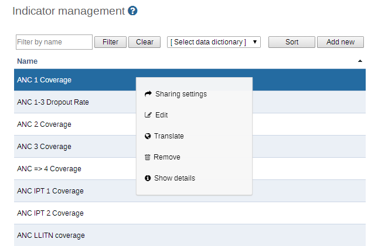
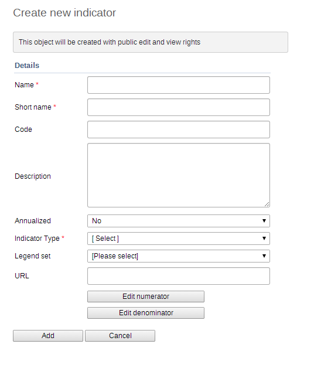

|  |
|  |
![[Note]](resources/images/admon/note.png) | Note |
|---|---|
Fields marked with an asterisk are compulsory. |
Click Apps > Maintenance > Indicator > Indicator.
Click the yellow plus button.
In the Name field, type the full name of the indicator, for example "Incidence of confirmed malaria cases per 1000 population".
In the Short name field, enter an abbreviated name of the indicator, for example "Inc conf. malaria per 1000 pop".
The short name must be less than or equal to 25 characters, including spaces.
(Optional) In the Code field, assign a code.
In many countries indicators are assigned a code.
In the Description field, type a brief, informative description of the indicator and how it is calculated.
If you want to apply an annualization factor during the calculation of the indicator, select Annualized.
Typically, an annualized indicator's numerator is multiplied by a factor of 12, and the denominator is for instance a yearly population figure. This allows for monthly coverage values to be calculated with yearly population figures.
Select the number of Decimals in data output.
Select an Indicator type.
This field determines a factor that will automatically be applied during the calculation of the indicator. Possible choices are determined by the indicator types. For example, a "Percent" indicator will automatically be multiplied by a factor of 100 when exported to the data mart, so that it will display as a percentage.
(Optional) Select a Legend set.
For more information about legend sets, see section "Using the GIS app".
In the URL field, enter a link, for example a link to an indicator registry, where a full metadata description of the indicator can be made available.
Select a Classification.
Click Edit numerator.
Type a clear description of the numerator.
Define the formula of the indicator by selecting the data elements that should compose the numerator from the "Data elements" field. Simply select the data element, and double click it. It then appears as part of the formula. You formula must be mathematically valid, including the proper use of parentheses when necessary. You can double click on each of the mathematical operator buttons below the indicator formula definition to add them to your formula.
Click Done to save all changes to the numerator.
Click Edit denominator.
Type a clear description of the denominator.
Define the formula of the indicator by selecting the data elements that should compose the denominator from the "Data elements" field. Simply select the data element, and double click it. It then appears as part of the formula. You formula must be mathematically valid, including the proper use of parentheses when necessary. You can double click on each of the mathematical operator buttons below the indicator formula definition to add them to your formula.
Click Done to save all changes to the denominator.
Click Save.